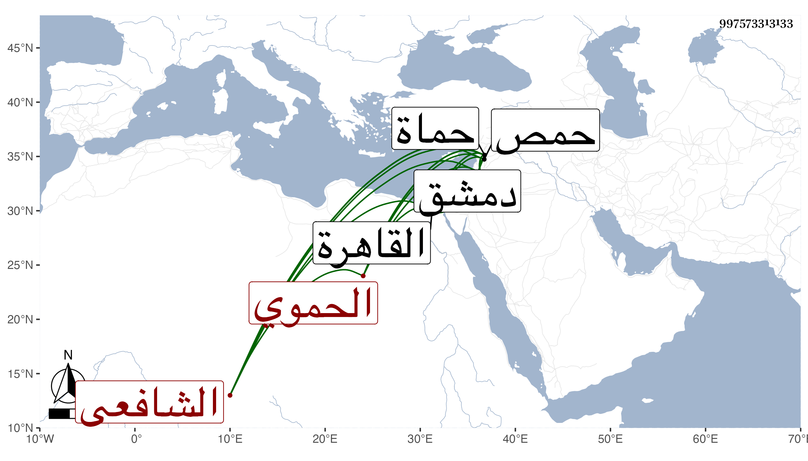

0902Sakhawi.DawLamic.ITO20230111-ara1.EIS1600.997573313133
Biography ID: 997573313133
571
فرج بن محمد بن محمد الزين بن الأمير ناصر الدين الحموي الشافعي أخو صاحبنا الجمال محمد الحنفي الآتي ويعرف بابن السابق . ولد في شوال سنة ثلاث عشرة وثمانمائة بحماة ونشأ بها فحفظ القرآن والبهجة الوردية والكافية وأخذ في الفقه ببلده عن الزين بن الخرزي وبحمص عن البرهان النقيراوي وقرأ في النحو والصرف مع قطعة من المنهاج الأصلي على حسن الهندي والكافية على الشمس الأندلسي حين كان قاضي حماة ومنظومة في الكتابة على ناظمها النور بن خطيب الدهشة والخزرجية على الشهاب بن عربشاه وباشر التوقيع ببلده عند عمه ثم استقل بكتابة سرها عوضا عنه فدام ثلاث عشرة سنة وعرض عليه قضاء الشافعية فيها في سنة ثمان وستين فتمنع ثم أشير عليه بالقبول فأجاب وحمدت مباشرته وتعفف عن الأوقاف ثم أعرض عنه ثم أعيد ، وقدم القاهرة في حياة أخيه وبعده غير مرة واجتمعت به مرارا ، وذكر لي أن أول قدومه لها في سنة ثلاث وخمسين وهو إنسان حسن سليم الفطرة محب في الحديث وأهله راغب في مطالعة التاريخ والأدبيات بحيث أفرد ملوك بلده في كتاب سماه بلوغ الطالب مناه من أخبار حماه وعمل ذيلا لتاريخ المؤيد صاحب حماة وتعانى النظم وكتبت عنه في سنة ست وسبعين ما كتب به إلى الصدر محمد بن محمد بن هبة الله الآتي وقد هوى جارية له اسمها بنفشا فقال :
| مولاي إن اسم التي وسط حشاك حلت | إعكس وصحف رسمه تجده أنت ثقتي |
وقوله وقد كتب إليه الصدر بقوله :
| القلب من فرقتكم أصبح ضيقا حرجا | منقبضا يسأل من أهل دمشق فرجا |
| لا ضاق يوما صدركم وعشت دهرا بهجا | ممتعا بنيل ما ترجو رجاء فرجا |
وغير هذا وحج مرتين الأولى في سنة سبع وثلاثين وأجاز له باستدعاء أخيه الزين الزركشي وعائشة الكنانية وقريبتها فاطمة الحنبلية وناصر الدين الفاقوسي والمقريزي في آخرين وخرجت له بسؤال أخيه عنهم أسانيد في جزء وورث أخاه ، مات في مستهل ربيع الثاني سنة ست وتسعين وهو قاض .
